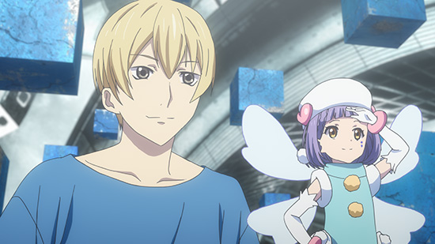
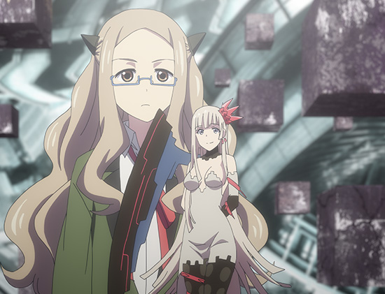
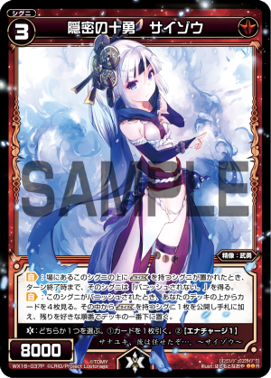

「Lostorage incited WIXOSS」
Column of episode 03
 Team Aaya! "Nice to meety-meet you!"
 Team Nanashi! "My deck will be released upon the 17th of November"
Suzuko's Encounters
 Doubt. Are you scared of losing?
Doubt. Are you scared of losing?
Mikage Hanna stated the above to her. I suppose you couldn't really consider them friends yet.
Of course she's scared. Even just battling is scary, but that doesn't stop the clock from ticking.
I'm not really into battling.
There we go, that's a more normal mentality.
He went out of his way to drink coffee as he approached Suzuko to give off the feel of an adult boy.
Black [coffee]... I hope he's not forcing himself...
And then Suzuko heads to the card shop.
Not walking while on your phone, but walking while on your card. Let's all be aware of passing cars.
The card shop. Is it a tradition to use tupperware?
In this third episode there are concurrent battles.
Suzuko finds a young man in a blue shirt looking exclusively for cards with little girls to purchase.
Side A
Empty-handed at a card shop! So there are people like that out there.
Immediate Wixoss!
And then their battle begins.
Okay, here we go, Aaya.
It's like they’re siblings. If only I could be a bit closer to Ril...
Roulette: [Blue player, go ahead]
Aaya uses a technical battle style of Trick cards to set Traps. You can find out more about her Signi class "Trick" and their Trap abilities [in this column].
Trap
Play traps in your Signi Zone.
The card effect allows you to play one card face down in each location in your Signi Zone.
(Those cards do not need a symbol)
If you set a new Trap, the Trap card that is already there goes to the trash.
When an enemy Signi attacks, if there is no Signi in front of it, flip over the Trap. If that card has a mark, then activate its effect. Afterwards, place it into the trash.
If an attack is about to pass through the Signi Zone, you can activate its effect.
In WX16 Decided Selector there are many cards that can be used to strengthen Traps.
Narumi continues to work the board in a technical manner.
Arts: Trip Trap is used to banish Sha Wuji! (He also activated Slash Out)
Then he uses that particular ability, his coin move.
「「「「「「Holograph!」」」」」」
Whoa, the LRIG Aaya cloned herself! Thanks for the support!
Here's what the actual Holograph ability of the card is.
Ril is now Level 4. She attacks.
Below is the board.
She searches for an Odanobu with Ark of Fighting Spirit, as well as banished Honeytra.
Holograph works perfectly and Ril's attack misses.
Aaya goes from six to five.
As with most cloning techniques, "for some reason the original is slightly different", and she is no exception to the rule. She gives me the chills.
Honey Trap, Honeytra!
The board is as below.
He also activates Itete with Honeytra's ability. {TL Note: No idea why it labels the card as Itete Gum/Rubber in-line}
Pretty soon Honeytra is going to be even more powerful thanks to the strong Traps coming out.
That Selector can't shut his mouth, Suzuko!
Okay Ril, use Honest! Which is the real one?
All together now: The middle one! (by Narumi)
It might be kind of hard to reproduce this using the real card's Honest ability, but if you're facing an Aaya user who will definitely use Holograph, be sure to ask whenever you use a LRIG attack.
Counterattack Destruct Through!
She used Destruct Through to freeze Lancelot and Goku.
But that actually doesn't smack you with any damage, and since Ril can use Rise even on frozen cards, the cards you put on top of your frozen Signi don't pass along the effect so it's not actually that bad.
Please stop... (Even though she can win on the next turn)
Narumi-oniichan's sorrow switch (which everyone has) is flipped by those tears.
He has a total mental breakdown.
WAAAAAAAHHHHH! The fragile chick is attacking!!
Victory! "Perfected Firedrake"
A finishing blow against the faltering Narumi. It's complete and utter overkill.
I think Narumi-san should really avoid battling girls from now on.
Side B
 Man, Hanna-chan's so admirable~
Man, Hanna-chan's so admirable~
She actually plays the game herself.
That's what he says to the column writer Hanna-chan.
Just the sound of that line makes me feel so gross I think we should all take a minute to wash our faces in the bathroom.
Even for Wixoss Magazine, published so kindly by Hobby Japan, everyone plays the card game. And not just Wixoss, but a little bit of everything.
And then the girl who grabs her arm is the girl who beat Chinatsu before, Kagari.
I'm seriously screwed!
Hanna doesn't refuse, and accepts her battle.
Are you for real, holding the card through your sleeve?!
Now then, it's Kagari & Yukime vs Hanna & Nanashi.
We explained Yukime's ability "Predict" last week wherein she's able to reveal her opponent's cards.
You must be rather confident.
On the other hand, Nanashi's coin ability is...
What good compatibility. Blind.
A smokescreen!! How surprising, we can't see ahead.
In Wixoss there are "public" and "private" zones.
The private zones include the main deck, LRIG deck, your hand, and Life Cloth.
In contrast, everything you can see on the field is a public zone. Unbelievably, the Blind ability is able to make all of these private zones.
It's a devilish situation where you can't even tell which cards are out or where.
And the board

Hold on, it appears that Yukime uses "Oddities". Let's introduce one of them, Paper Umbrella (Beautiful legs)
Oddities have the unique "Layer" ability.
The Layer icon ability can affect every other Signi you have in play.
If you have three of the above Paper Umbrellas in play, then all of them gain +3000 Power.
That means that Level 1 cards could have up to 5000 Power.
But, Yukime lost.
Too strong...!
Hanna witnesses "disappearance" with her own two eyes. At the same time, Suzuko learns the "truth of disappearing".
The tomboy suddenly became polite.
And sure enough, the truth is...?
It's not because I didn't ask! There wasn't even any fine print!
There are many different kinds of Signi girls!
We picked out a few of the new Signi for you!
[Nezukozo] (Rat Brat)
A tiny, tiny clever girl
[Code Eat Chocospoo]
A young face with a plump body.
[Saizou]

A slender beauty.
[#Shigoto#]
Mature and sensual.
If any of them have caught your eye, then Wixoss is for you.
Will he finally make his appearance in episode 4?! Look forward to it!